Adendo: Derivação da Equação de Correção da Reação de Nêutron†
Jon Fleming adicionou esta seção em 2005. O objetivo é mostrar a derivação da equação de "correção" de Cook e como seções transversais não iguais afetam o resultado. Baseia-se em dois pressupostos principais, ambos os quais são quase certamente falsos:
- Não há chumbo primordial nas amostras em consideração; todo o chumbo foi criado por decaimento radioativo e/ou captura de nêutrons.
- O fluxo de nêutrons foi suficiente para criar todo o 208Pb nas amostras, já que o 208Pb não poderia ter vindo do decaimento do 232Th (o que deixaria pelo menos um pouco de 232Th residual nas amostras hoje).
Relembre a série de reações de captura de nêutrons apresentada no texto principal:
|
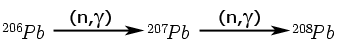 |
Vamos avançar do simples para o mais complexo; começando com o fim da cadeia, em seguida considerando o início da cadeia e, finalmente, olhando para o meio da cadeia.
Como "sabemos" que todo o 208Pb foi gerado por captura de nêutrons, usando C207→208 para indicar a seção de choque para converter 207Pb em 208Pb por captura de nêutrons, usando N para denotar o fluxo de nêutrons e usando 208Pbmedido para denotar a quantidade medida de 208Pb na amostra hoje:
|
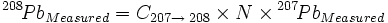 | (1) |
Ou, resolvendo para
N:
|
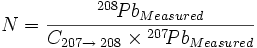 | (2) |
A seguir, movemo-nos para o início da cadeia. Aqui há um mecanismo que cria 206Pb (decaimento radioativo de 238U) e outro mecanismo que destrói 206Pb (captura de nêutrons). Portanto, a quantidade medida de 206Pb hoje é menor que a quantidade criada a partir do decaimento de 238U. Usando 206PbRadiogenic como o 206Pb que foi gerado a partir do decaimento radioativo e que deve ser usado na determinação da idade; 206PbMeasured como o 206Pb que foi realmente medido na amostra "hoje"; e 206PbConverted como o 206Pb que foi gerado a partir do decaimento radioativo e depois convertido em 207Pb por captura de nêutrons:
|
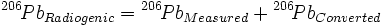 | (3) |
206PbConverted é, obviamente, a quantidade de 206Pb medida multiplicada por um fator de conversão que é o produto da seção de choque (para converter 206Pb em 207Pb por captura de nêutrons) e o fluxo total de nêutrons. Como o 206Pb e o 207Pb estavam em proximidade, o fluxo total de nêutrons N é o mesmo para ambos. Chamando a seção de choque de C206→207:
|
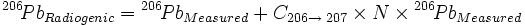 | (4) |
Como N é o mesmo para ambos 206Pb e 207Pb, podemos substituir o lado direito da equação (2) pelo termo "N" na equação (4):
|
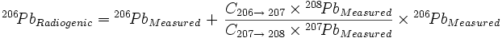 | (5) |
Agora consideramos o meio da série de captura de nêutrons, a quantidade de 207Pb gerada a partir do decaimento radioativo, 207Pbradiogênico, que deve ser utilizada no cálculo da idade. Aqui, dois mecanismos estão criando 207Pb (decaimento radioativo de 235U e captura de nêutrons de 206Pb) e um mecanismo está destruindo 207Pb (captura de nêutrons criando 208Pb).
207PbRadiogênico é a quantidade medida 207PbMedida mais a quantidade de 207Pb que foi gerada por decaimento radioativo mas depois foi convertida em 208Pb por captura de nêutrons (o que por sua vez é igual à quantidade de 208PbMedida já que "sabemos" que todo o 208Pb veio de uma conversão um-para-um de 207Pb) e então menos a quantidade de 207Pb que foi gerada a partir de 206Pb por captura de nêutrons em vez de decaimento radioativo (o que por sua vez é o segundo termo do lado direito da equação (5)):
|
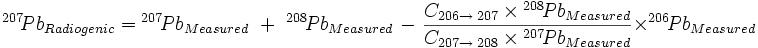 | (6) |
E, finalmente, dividindo a equação (5) pela equação (6):
|
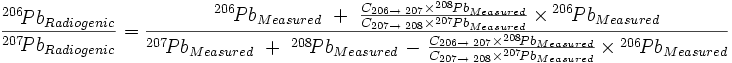 | (7) |
o que, quando C207→208 = C206→207 (conforme Cook assumiu), reduz-se à equação apresentada no texto principal, exceto pela maneira como os termos de Pb estão agrupados no último termo tanto do numerador quanto do denominador:
|
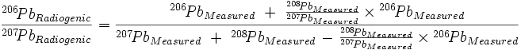 | (8) |
Para calcular o 206Pb/207Pb para a terceira linha da Tabela 5, usando os valores de Dalrymple para as seções transversais inseridos na equação (7):
|
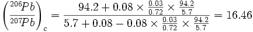 |
Não sei por que meu resultado é ligeiramente (0,5%) diferente do de Dalrymple, 16,38, mas a diferença não é significativa.
Usando valores mais recentes para as seções de choque:
|
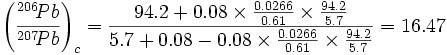 |
o que é insignificativamente diferente dos outros valores.
Para calcular a idade a partir desses valores "corrigidos" de 206Pb/207Pb, utilizamos a equação padrão (que não pode ser resolvida em forma fechada) para a idade "t" de uma amostra (em anos) dada sua razão 206Pb/207Pb, a constante de decaimento de 238U (λ1 = 1,55125×10-10 por ano) e a constante de decaimento de 235U (λ2 = 9,8485×10-10 por ano) é:
|
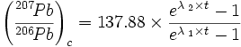 |
(de Dalrymple, G. Brent, "The Age Of the Earth", Stanford University Press, 1991, página 101. Os valores de λ1 e λ2 são da mesma fonte, página 80. Observe que a equação usa 207Pb/206Pb, o inverso das razões de chumbo utilizadas neste artigo e adendo)
A equação da idade é facilmente resolvida por qualquer uma de uma variedade de técnicas numéricas. Para 206Pb/207Pb = 16,46, a idade calculada é de 630 milhões de anos, e para 206Pb/207Pb = 16,47, a idade calculada é de 629 milhões de anos. Incluindo o efeito de seções de choque não iguais para as reações de captura de nêutrons torna completamente obsoleta a conclusão de Cook. A captura de nêutrons não afeta perceptivelmente a medição de idades por meio de razões 206Pb/207Pb.
† Esta seção tem direitos autorais © 2005 Jon Fleming. A reprodução é permitida se este aviso de direitos autorais for mencionado.
Devo reconhecimento ao Dr. Jamie Gilmour (Lecturer Sênior, Isótopos Geoquímica e Cosmoquímica, Escola de Ciências da Terra, Atmosfera e Ciências Ambientais da Universidade de Manchester) por me indicar o caminho correto para compreender esta derivação.